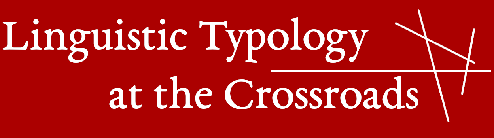

An international diamond open-access journal devoted to typological research. Class A (ANVUR), indexed in ERIH PLUS and part of LingOA.
JournalI see editorial work as a way to create open spaces for exchange across methods, traditions and disciplinary boundaries.

An international diamond open-access journal devoted to typological research. Class A (ANVUR), indexed in ERIH PLUS and part of LingOA.
JournalRigorous, accessible scholarly communication and dialogue across theoretical and methodological approaches.
Trends in Linguistics · Lingue e Linguaggio · CLUB Working Papers in Linguistics · Linguistica · Materiali linguistici